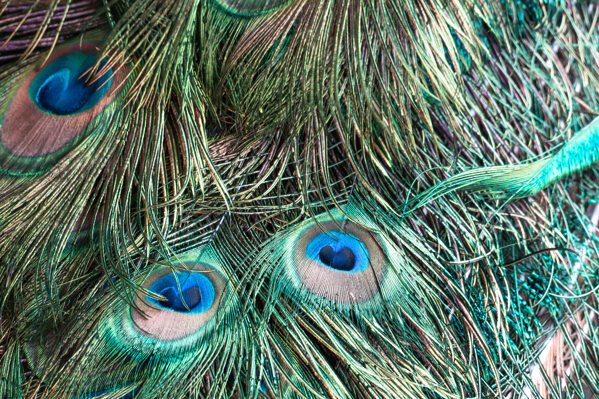
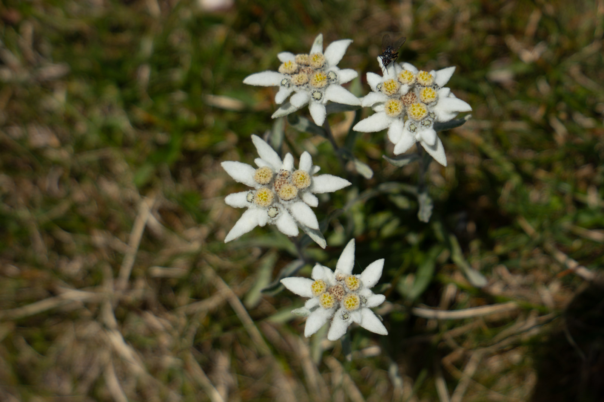
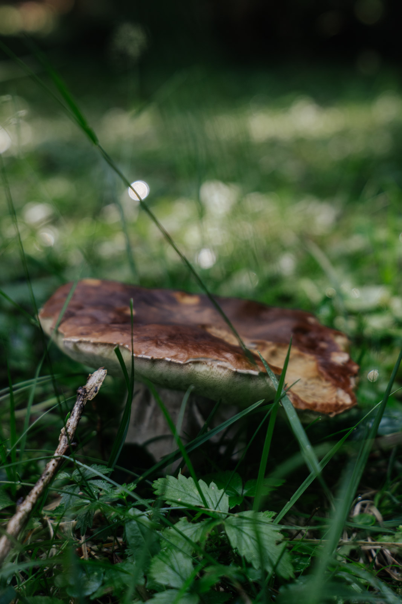
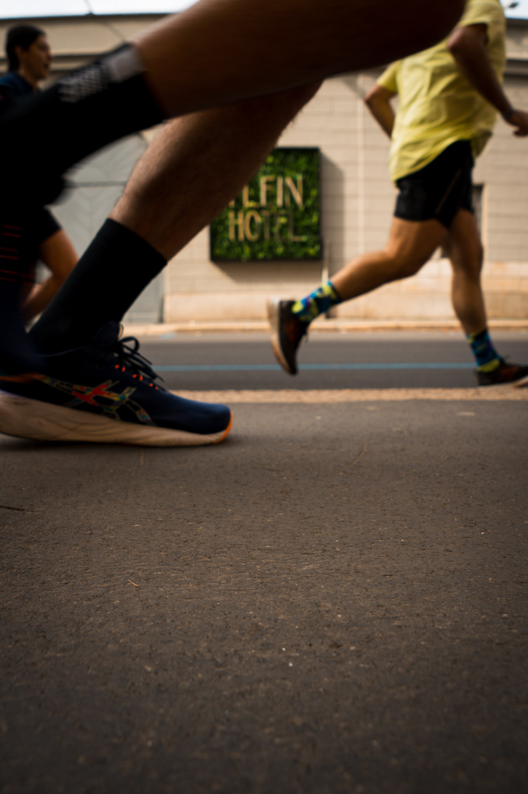
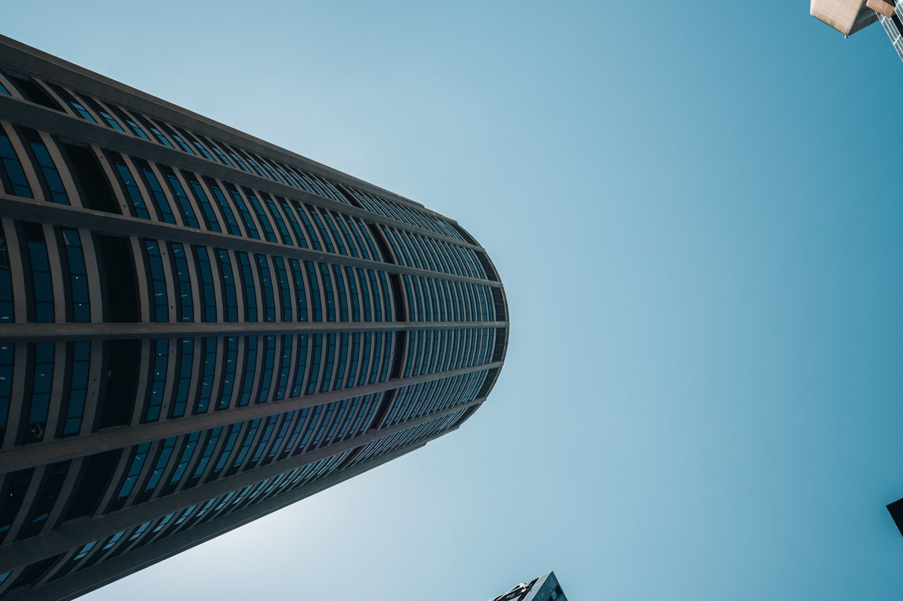
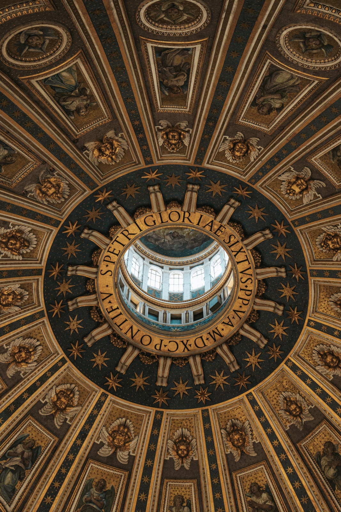

Macro: il molto piccolo
La macro vera riproduce il soggetto sul sensore in grandezza naturale o più. Si dice rapporto di riproduzione 1:1. Serve un obiettivo macro dedicato. Ma per iniziare basta molto meno.
- Lenti addizionali da avvitare davanti all'obiettivo. Economiche e leggere.
- Tubi di prolunga tra corpo e obiettivo. Permettono di mettere a fuoco più vicino.
- Un tele con una distanza minima di messa a fuoco corta. Non è macro vera, ma ci si avvicina e lascia lontano dal soggetto.


La profondità di campo minima
Da vicino la profondità di campo si riduce a pochi millimetri, anche a f/11. Per questo:
- Metti a fuoco a mano e muovi te stesso avanti e indietro, non la ghiera.
- Tieni il sensore parallelo al soggetto, se vuoi più parti nitide.
- Usa il focus stacking per i soggetti fermi. Lo vediamo nel modulo 16.
- Il vento è il nemico. Lavora al mattino presto o ripara il soggetto con il corpo.

Sport: il molto veloce
Lo sport mette insieme tutto quello che hai imparato sul tempo, sull'autofocus e sul momento. Le regole di base:
- Tempo rapido. Da 1/1000 in su per fermare corse, salti e palle.
- Autofocus continuo con inseguimento, e una zona di fuoco sul punto dove succederà l'azione.
- Conosci lo sport. Sapere dove andrà la palla, o dove si frena prima della curva, vale più di qualsiasi obiettivo.
- Cerca le emozioni oltre all'azione: l'esultanza, la fatica, la delusione.


Il panning
Per mostrare la velocità si può fare il contrario: tempo lento, da 1/30 a 1/60, e seguire il soggetto girando su se stessi durante lo scatto. Il soggetto resta abbastanza nitido, lo sfondo diventa una scia. Riesce una foto su dieci. È normale.
Architettura: il molto grande
Gli edifici non si muovono. Hai tutto il tempo per scegliere la luce, il punto di vista e le linee. Per questo l'architettura insegna la precisione.

- Linee verticali dritte. Tieni la fotocamera perfettamente in piano, senza inclinarla verso l'alto. Se l'edificio non entra, allontanati o correggi in post-produzione.
- Oppure esagera. Se inclini, inclina molto. Una via di mezzo sembra un errore.
- Luce radente per le facciate in pietra, che ne rivela la texture. Ora blu per gli edifici illuminati.
- Gli interni hanno contrasti forti tra finestre e ombre. Il bracketing aiuta.


Esercizio
Tre uscite brevi
Piccolo, veloce, grande
- Macro. In un giardino trova un fiore, una foglia o un insetto. Fai dieci foto spostando il punto di fuoco di pochi millimetri.
- Sport. A una partita o in un parco, fotografa chi corre. Prova 1/1000 per fermare e 1/40 con il panning.
- Architettura. Scegli un edificio e fotografalo con le verticali perfettamente dritte. Poi dal basso, con le linee che convergono di proposito.